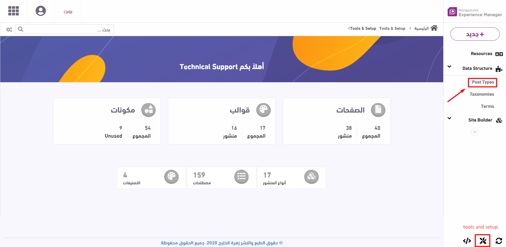
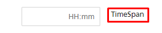

Post Type
You can reach "Post Types" page from "tools and setup"

Configuring a post type indicates the template which will be used by posts of this type. The post type page consists of the following tabs:
General
- Title: The title for the post type displayed on the Admin panel, e.g. مقالات
- Code: The unique code for the post type used in the URLs to identify the current post type.
- Child: Used to assign a child for the post type example (Article and Parts), [it's used also in Post Search (GetChildren: true) with a Role ‘child’ and filled in post SubPosts], e.g. the episode post type can be added as a child for the show post type.
- Custom Javascript: The script to be executed on the post form related events, e.g. to prevent saving an empty summary for a post write a script that fills it from content if empty.
- Image: The image of the post type used in the Admin panel.
Meta Data
- Key: The key used for getting this metadata in the code., e.g. photographer. This is used to distinguish between meta when displaying them on the front.
- Display: The title that appears in the post form, e.g. المصور.
- FieldType: The type of the data (Ex: text, list, …).
- Text: It displays the input in the form of text.
- TextArea: It displayed a text area for multiline text.
- Editor: It displayed a tinymce HTML editor.
- CheckBox: It displayed a checkbox.
- Map: It displays a geographic map.
- Date: It displays a date picker.
- DateTime: It displays a datetime picker.
- TimeSpan: A timespan describes an interval within the item.

- YearPicker: It displays a year picker.
- DayPicker: It displays a day picker.
- DayName: It displays a day picker.
- MonthPicker: It displays a month picker.
- List: It will check the Data source prop
- if it contains “,” it will show the comma separated data (item1,item2,item3…)
- It is a “|” separated field like (source|Name) it will fetch the list of terms for a Taxonomy named “source”
- Enum: It displays Items from the enum defined in DataSource, Enum are hard coded
- Color: It displays a color picker. The displayed colors are implemented in the StyleConfig class. They are listed in the AvailableColorsinput field.
- Hidden: not accessible to view.
- MangomoloAudioCategory: It fetches categories from Mangomolo audio categories API
- MangomoloVideoCategory: It fetches categories from Mangomolo video categories API
- Required: If enabled, it's mandatory in the post form (true/false).
- Icon: meta icon
- Order: Data order appearance in the post form.
- DataSource:
- If it contains “,”
- It is a “|” separated field like (source|Name) it will fetch the list of terms for a Taxonomy named “source”. Only used when type is list (comma separated).
-
Default: Used if FieldType is "date" or FieldType is "datetime”, if it is "[NOW]” it will be calculated and filled in code. If this meta is not filled, this value will be saved upon saving a post.
-
Role: The data role (e.g. display: in case we need to display this meta on the website, link, icon, Youtube, Map).
-
Public: if true, this can be shown on the website.
-
ShowInList: if enabled,the meta is displayed as a column in the posts table in the admin panel.
- HiddenInitially: If enabled, the field will be hidden in the form until added.
Media
- Compress: If enabled, media will be compressed.
- Count: Number of media allowed 0,1,2....n or * 1 if infinity, e.g. if the count for المحتوى is 3, it allows the user to add only three items for the selected type "Video".
After adding two videos, UploadVideo option is still available because count is set to 3 so one more video can be added.
After adding the third video, UploadVideo option is no longer available.
- Placement: The term used for handling media items in the code, e.g. cover, main, editor or gallery. It’s possible to create any new placement, that way you need to handle it in the code.
- cover: Once added, can be found under the details tab in post creation form. It’s usually used as a cover image in listing widgets, however it can be used in the post detail page as well.
- main: Once added, can be found under the details tab in post creation form. It’s usually used in the post detail page.
- gallery: usually used as a gallery on the front. It’s located under the post gallery tab.
- editor: added in case the post type has an editor.
- Title: hint in the form, e.g. صورة الغلاف.
- Types: Media item type (Ex: image, audio, video, file) with the possibility of allowing multiple types.
- Extensions: The extension for the selected type (Ex: jpg, png if type is image Usually, the extensions are added in the media config section. For each media, there exists
- type: image, audio, video, file, live, smil.
- extensions: extension for the selected type, e.g. jpg,png if type = image.
- filters: applied on this type, e.g. image/* for image type and video/mp4 for video type.
- Sizes: applicable on images. If specified, the user will be able to crop uploaded images based on these ratios. The ratios are added in the media configuration under Crop Configs where each crop config has: name (e.g. قياس16/9), value (e.g. 1), ratio (e.g. 1.78), filename (e.g. 1). In case the size is set to قياس مربع (800x800), it will be displayed as the selected option for the uploaded image.
- Required: If enabled, it's mandatory to upload this item in the post form.
A popup is diplayed on the screen if the required field is empty.
- No Crop: if enabled, the user won’t be able to crop the image after uploading it.
- No Caption: If enabled, caption becomes optional.
- Order: media order
- Enable Custom Caption: if enabled, the user may override a media caption (specifically for this post) when selecting an existing media from the archive.
- FrameTemplates: The code of the watermark defined in the MediaFrameConfigs, e.g. فيديو
- DefaultFrameTemplate: The default code of the watermark defined in the MediaFrameConfigs, e.g. صورة البرنامج
- ShowPlacement: Used for accessing the placement of the media item.
- SizeHelpMessage: Help message related to the size of the media item.
Note: If the content of this post type is enabled, then we need to add the following media template:
{
"Placement": "editor",
"Title": "ميديا داخلية",
"Types": "image,video",
"Extensions": "",
"Sizes": "",
"Count": "*1",
"MaxSize": "",
"Required": "false",
"NoCrop": "true",
"Compress": "true",
"NoCaption": "true",
"Order": "0",
"ShowPlacement": "false",
"EnableCustomCaption": "false",
"FrameTemplates": "",
"DefaultFrameTemplate": "",
"HasDataFor": ""
}
Relations
- Name: The name of the relation, e.g. الكاتب
- Code: The code of the relation used to relate post types together, e.g. author
- Icon: The Icon of the relation to be displayed on the Admin panel. Note that when hovering on an icon, its name is displayed as a text, e.g. "fas fa * birthday * cake" for the birthday cake icon.
- Types: The types of posts used in this relation, e.g. article for the Author relation allows the relation named Author to have a posts related to type article. More than one type can be selected from the displayed dropdown list.
- Terms: The term(s) that this relation can be related to, e.g. Politics
- Order: The order of the relation used to show the relation in the post edit or create form, e.g. 1 means that the current relation appears as the first relation in the post form
- Minimum: The number of the posts that are allowed to be related to this post type. The user can’t select related posts less than the min number. E.g. if Min is set to 1, an article should at least have 1 author, meaning that this field is mandatory.
- Maximum: The number of posts that are allowed to be related to this post type. The user can’t exceed this number when selecting related posts. E.g. if Max is set to 3, an article should have maximum 3 authors
After adding 2 authors for an article, the search option remains visible until the user selects 3 authors.
- Direction: The direction used to identify the type of the relationship if it’s up/down (in Author Post type it is up relation while in Article type it is down relation ).
- Exclude from Path: if enabled, it won’t be included neither in the breadcrumbs nor in the page header.
- Inherited Metas: The Inherited Metadata between the two post types, is a comma separated field used to show the relative meta data in the Post edit or create form.
-
FrontStyle: Used when the widget data source is CurrentUpRelatives to choose the style of the relations reflected on website, also in the SourceSpecification of the Widget data source,("groupby=subterms,groupby=mainterms,groupby=types”), e.g. parent
-
API request size: Used for down relatives size in search criteria in the Mobile platform, e.g. if set to 3, it returns 3 articles in a JSON file.
-
FrontRequestSize: To specify the post relatives size in the front platform, e.g. if set to 4, only 4 articles are displayed in the front.
-
Fetch Down Anyway: Is used to decide if the query should fetch the down relatives or not, e.g. if it is enabled for the AuthorArticle relation, it returns all the related articles for an author.
-
Hide In List: Used in the table of posts to allow the up relative (author) to be displayed as a Column or not. As the below image shows (Author) is relative so we can turn on the hide in list in case we don’t need to show the relative column in the table.
The (Author) column is hidden from the table after turning on the Hide In List. -
Is Main: To select if a relation is main or not. The main relation is used in jsonld render and in the custom tag render.
Terms
-
Taxonomy Code: the code of the taxonomy to be used in this post, e.g. category.
-
Minimum Terms: minimum allowed number of terms that this post should belong to.
-
Maximum Terms: maximum allowed number of terms that this post should belong to ( if it is -1 it means that it is infinite).
- Default Value: The default term used if it’s not filled in the form.
- Style: This is to specify how to display terms of this taxonomy in the post creation form, e.g. checkbox, multicombo. If empty, dropdown is used.
If it is checkbox, the terms are displayed as in the below figure.
- Website Style: The style used in the form, e.g. hidden, checkbox, radio, dropdown, multicombo.
-
Is Main: To select if a term is main or not.
-
Show Published Only: if isMain is enabled, this should be enabled as well.
-
Has Publisher: It is used in the Admin to decide if the taxonomy should be displayed in the Publisher page or not to allow the user to sort by taxonomy, For example: Category is on, tags is off due to the huge number of tags.
The terms of "category" are displayed as in the below image.
Templates
-
Index Template Id: the template used for the term index page, e.g. /news or /category.
-
Details Template Id: It is used for the details page of the post, e.g. /article/sports/1332
-
Terms Template Id: the template index page, e.g. /category/sports.
-
Infinite Scroll Template Id: It is used for infinite scroll pages, e.g. more articles related to the current page are loaded when srolling down.
-
Mobile List Style: list style of post type returned by the API.
Analytics
- Allow Custom Meta Tags: if enabled, an SEO tab will appear which allow users to specify custom meta tags for this post.
To enable this, you still need to enable EnableCustomMetaTags in SEO configs.
Then, the SEO section is displayed as in the image below.
After adding a meta tag, the user can edit or delete it.
- Listing Meta Title: meta title of post listing page (e.g. /article)
- Listing Meta Description: meta description of post listing page (e.g. /article)
- Content Group: , e.g. Podcasts. It is selected from a list of options (in analytics configs, content group, e.g. News:1,Programs:2,Infographics:3).
After filling the content groups in analytics configs, they are displayed in the form of a dropdown list as in the below image.
- Source Type: term, relative, or both if none is selected
- Source Spec: usually the type, e.g. podcasts
- Change Frequency: change frequency used in the sitemaps, defaults to daily.
- Priority: priority used in the sitemaps, defaults to 1.
Settings
-
EnableAMP: To choose if AMP should be enabled. If enabled, we need to specify the AMP URL pattern.
-
EnablePodcastRSS: If post and URL are visible for public then RSS for podcast will be enabled.
-
Section: e.g. الأخبار
-
UrlPattern: It defines the URL pattern of posts of this type e.g. "[posttype]/[category]/[id]/[slug]"
-
MediaTitlePattern: The pattern that describes the title of media post, e.g. [postterms.video] [posttitle]
-
MediaDescriptionPattern: The pattern that describes the media post.
-
MediaTagsPattern: The pattern that describes the tags of media post
-
SlugLength: The max length of slug in the URL.
-
AMPUrlPattern: defines the URL pattern of AMP pages having this type, e.g. [amp/[posttype]/[id]/[slug]
-
ShowTitle: The name of the show.
Note that doing the above doesn’t enable AMP as it still needs some additional configuration. * Format: the @type in jsonld, e.g. NewsArticle.
-
Publisher Size: max size of posts having this type that can be ordered through the publisher.
-
Publisher Title: To identify the title of the publisher
-
Cache Duration: caching duration of posts
-
Form View: the name of the view (inside Posts/Custom folder) in case we want to use another form, e.g. Schedule.
-
Breadcrumbs Pattern: pattern of breadcrumbs. The default is homeposttypetaxonomy, e.g. relative-posttype-post.
-
Tag Source: default value of tag source, used in case the one in the widget was empty.
-
Icon/Color: if filled and the tag source was configured to return the type, the icon/color (property named style) will be returned as well to the front/API.
-
Exclude: If enabled, exclude from dashboard.
-
User Generated: this option should be checked, if posts of this type are entered by end users.
-
Thumbnail: photo URL which acts as a default image for posts of this type.
Form
- Use Custom Configs: if enabled, the configuration below this will be considered. The fields include: title, summary, date (published date), end date (expiry date), content, short title, Notes (used among editors), platform, url, style, template.
Their properties include: Show, Required, Label, Values, Max length, Min length.
- Show: If enabled, this field will appear in the form.
- Required: If enabled, it is mandatory to fill this field in the form.
- Label: The label of this field, e.g. تفاصيل
- Values: The list of allowed values for this field.
- MaxLength: The maximum allowed length (if string), e.g. 1000
- MinLength: The minimum allowed length (if string), e.g. 1
Note that there’s no need to translate the fields’ labels because when the resources are saved, they will be used from there, unless we want a different translation, then we shall fill the label property.
- Multilingual: To enable multi languages content.
- Allow Import: If enabled, an import button will be displayed in the post listing page.
- Order: To specify the order to show the form.
- DefaultForm: If the form was not specified it will take this value as a default for the form.
- DefaultIndex: In case index was not identified it will take this index as a default value.
- After Save Action: To specify what action should be done after save (by default: Edit).
- Additional Columns: To add additional columns in the post listing page, e.g. CreatedBy:[post.CreatedByUser.LastName]<BR>[post.CreationDate]